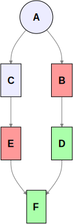

In late 2023, staring at the “flag” test case in preact-signals that I describe in my Archaeology of Glitches posting, I realised something decisive: reactive systems can provide a strong, structural guarantee of data consistency. Given that, it became clear that Infusion could be reworked as a fully reactive system, rather than the opportunistic hybrid I had been building through the 2010s.
This post will notice that the apparent diversity of reactive systems masks a simple unifying principle, related to a principle I had already been following in Infusion’s development.
Attractions of preact-signals
preact-signals was an attractive vehicle for several reasons. Firstly there was the really small, dependence-free and pretty widely-used codebase that promised that it could be fairly readily understood, but also was the fact that it was provably portable and useful in contexts quite different from its home integration with Preact. The development community, though somewhat inflexibly-minded, were pretty non-ideological and happy to see integration with minimal rendering engines such as htm templating, and then of course there was the very comforting set of test cases with their attractive ASCII art topologies which convinced me that there was an important property of consistency here, and preact-signals definitely enjoyed it.
However, several downsides to the use of preact-signals did slow my work over the last year, as well as producing a persistent anxiety that I was still missing something fundamental about reactivity itself.
Apparent pluralism of reactivity
Over this period I returned to Milo Mighdoll’s admirable Super Charging Fine-Grained Reactivity illustration in several different waves. I reproduce one of his crucial diagrams here to focus our minds:

Milo’s treatment was admirably clear. What troubled me was not his explanation, but the sheer plurality of algorithms it seemed to sit alongside. In this confused space, it seemed likely there were several other aspects of preact-signal’s behaviour that I was likely relying on without there being necessarily tests which validated them, that kept me from digging in too much further.
Over the period I returned to this page from time to time, especially in a big wave this summer when dear Rabbits, who has far deeper reading and understanding of reactivity than me, pointed me again to Milo and Ryan Carniato’s writings, as well as other related material such as Jane Street’s Seven Implementations of Incremental. This only raised my unease, since the furious complexity of these systems, combined with the lack of obvious unifying principles, made it difficult to see reactivity as a single, well-defined phenomenon rather than a loose collection of techniques. I began to wonder how much of this landscape I would actually need to understand in order to make progress.
Why was I notified?
The beginning of unjamming myself cognitively came alongside a Claude conversation
where I asked it if it could indeed, given the information available in preact-signals’ runtime, actually implement
a findCause utility that could determine why a particular update has occurred.
What unsettled me most was not the complexity of preact-signals’ internals, but a recurring uncertainty: although I could
often see what I had notionally done to trigger an effect, I often could not tell what the connecting reason was.
Here’s the kind of endBatch stack trace one is very frequently staring at inside an effect. Certainly one knows one has done something
to provoke the effect by calling set a few levels down but in a non-trivial design the actual relationship can be
far from clear:

Whilst I didn’t trust the actual AI reasoning much further than I could throw it, it was convincing enough to suggest to me that the question really might not be answerable. This brought me back to Milo’s explanation and diagram above with a vengeance. This led to a clear realisation: commodity signal systems are not designed to explain why an update occurred — only to ensure that it propagates correctly.
The virtue of the extreme simplicity of Milo’s own reactivity and explanation suddenly leaped out at me, because it was in his system that the reason the question couldn’t be answered was as clear as possible. When an originally updated node has been flipped from dirty to clean, that is the end of one’s acquaintance with it, and once one has returned from the stack frame where this is done, there isn’t enough information in the system to explain the cause.
Being cured of the fear that there was something fundamental I didn’t understand about reactive systems because they couldn’t answer a question they hadn’t kept records to answer, simultaneously made me understand the essential unity of these systems and how this failure of record-keeping was actually a pretty inessential part of their algorithm that could be fixed pretty easily.
Milo’s golden malleability
As I started to adapt Milo’s code, I found it was harbouring a golden capability I’d completely missed when I’d
looked at it cursorily. Here’s the set function for reactively’s Reactive<T>:
set(fnOrValue: T | (() => T)): void {
if (typeof fnOrValue === "function") {
const fn = fnOrValue as () => T;
if (fn !== this.fn) {
this.stale(CacheDirty);
}
this.fn = fn;
} else {
if (this.fn) {
this.removeParentObservers(0);
this.sources = null;
this.fn = undefined;
}
...
Several frameworks helpfully unify some grouping of signal, computed, and effects nodes, but no others in my experience actually allow runtime malleability from one node type to another. The stuffy world of TypeScript will generally frown on such attempts, but Milo’s typing is so admirably loose that it is perfectly possible to downgrade a computed arc back down to a plain signal. This is for us a necessary (but not sufficient) capability for implementing reactive lenses, because we can’t expect to construct signals and bidirectional relationships in a single constructor call — and if we need to wire up the backward leg of a transform in a separate operation, by symmetry the forward leg should be wirable separately as well. Here’s the kind of test we need to support. So I was enormously encouraged to find that not only was this perfectly possible in a modern reactive library, but that Milo was thinking along these lines. One does worry that this might be the kind of youthful indiscretion that he may not permit himself in later life, since more recent branches of reactively seem to be free of this kind of irreligiosity.
From two to three
Flushed with success after using my hacked distribution of Milo’s system to implement a simple reactive lens implementing the time-honoured chestnut of the temperature conversion sample relating temperatures in Celsius and Fahrenheit, I then turn my attention to the next natural stage of malleable authorship and try to extend the network from two to three nodes in a chain of lenses managing temperatures Kelvin, Celsius and Fahrenheit. I then stare in horror at the following diagram and realise that a far deeper pit separates the worlds of commodity and malleable reactivity than I imagined:

Someone with more foresight than me wouldn’t have been surprised by this, but if you stare at the C node in the
centre of the diagram you will realise that it requires a fundamental break from the conventional reactive representation of
“a node” as “a computed node” since it has two incoming arcs. This apparent cycle looks alarming, but it does not imply instability or inconsistency,
since
we still have Dan Ingalls
in our back pocket reassuring us that we are just seeking “alternate paths of control flow”,
but still something quite fundamental needs to be done to the representation and it needs to be returned to a
more conventional graph representation with separate structures representing nodes and edges.
Essential unity of reactivity
After continuing to stare at Milo’s diagram some more, and after having fairly rapidly become unblocked and implemented most of the fluid.cell reactive system as a result, it struck me that actually the core principle underlying all effective reactive systems was remarkably simple and one that I’d actually been familiar with for a while. I’d summarise this with the slogan DO LEAST ADVANCED WORK FIRST which could also be seen as a variety of the Principle of Least Commitment.
Phil Agre in his 1997 Computation and Human Experience gives a fair summary of the principle:
One example of a computational principle is commonly known as least commitment (Marr 1982: 106; Stefik 1981). This is the idea that a system should, other things being equal, only derive the logically necessary conclusions of each new item of information, thus keeping its options open to the greatest possible extent.
A few things to observe here — firstly the point about “other things being equal”: clearly the principle is only relevant when a system has multiple options at its disposal, which could never happen in an either an imperative system, or in a reactive system whose dataflow has a strict tree structure. And it becomes far more relevant in reactive systems with cyclic or apparently cyclic relationships, since the number of available dataflow paths in these cases explodes rapidly.
An important practical example is a component whose layer hierarchy depends on one of its computed values — the situation that appeared in my previous post. Faced with a computational output (a new layer name) which could potentially change the meaning of most of the component, it seems clear that one will make strong efforts to contextualise the output as strongly as possible by evaluating all possible “cheaper” values that might influence it. As a result, “old Infusion” accumulated many of these sites where a certain category of work was done repeatedly until all that was left on the table was a higher category of less information-preserving work. So it is comforting to realise that I have actually been building a reactive system all this time, in advance of having really understood what reactivity is.
In September’s update I noted a “hierarchy of good functions” which are increasingly information-destroying. The notion is that given a choice of relations to update, “other things being equal” one would prefer to choose those that lie at the top of the hierarchy. I was really pleased to realise that the same principle which guides self-reflective reactive systems in general is also the one which assures glitch-freedom. And this makes sense in literal terms too — the relation at the top of a diamond is a priori likely to be information-destroying, since two arcs go in and one comes out.
So in the face of Milo’s demonstration and having this principle in hand, we can be confident that much of the excess complexity we run into out there is driven less by necessity than by benchmarking constraints.
The mysterious frontier
Some wrinkles still remain. Most significantly, the rather vexing question of what priority should be given to parts of the graph which construct as “side effects” of compute arcs themselves. To start with, the community mostly doesn’t believe in such side effects and has not devoted attention to testing and specifying them. In my naive days I imagined that handling such things was one the things that distinguished Adapton from commodity signals implementations until Rabbits pointed out to me that Adapton is less rather than more capable than commodity signals since it doesn’t even satisfy the early cutoff property.
The community would like to pretend that the graph is not modified during reactions1, but this is not realistic,
especially in a self-reactive malleable environment. In solid-signals, there has for a few years been a helpful test
"updates downstream pending computations"
which checks that just such a situation is covered. Porting this test to a few other commodity frameworks
reassuringly produces the same order of notification "c1c2t1c2_1" but somewhat alarmingly as of November 2025 there
has been an update to Solid’s test that flips the order
to "t1c1c2c2_1". This comes along with a new propagation mode which expects that previously synchronous computations
will not propagate across the graph unless they are manually cranked with a call to flush(). To the extent I understand
the new model, I feel positive towards it — deprivileging authors in the space of code by shortening their stacks,
in favour of those living in the substrate who expect naive realism with as few hidden coordinates as possible feels like
a good direction. But I imagine that a generation of coders2 who have grown up with the expectation that an effect or
manual pull of a value will immediately cause it to be brought up to date might find this model to be confounding.
A clear question is — is this reversal of the order of notification a necessary consequence of moving to a universally asynchronous model of notification? Enquiring minds will sift this out.